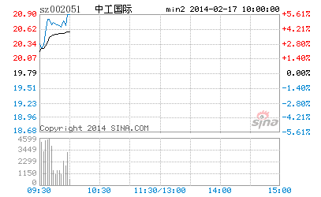

谁都知道N中工万千宠爱在一身，一年多没有新面孔了，突然来了一个新的，大伙热烈一下有什么不对的？值得某些人这么大惊小怪的？鄙视所有对N中工15元不敢买50元就吃醋的人！
今天该股90%多的换手意味着，所有中签的人基本都抛了（对手盘包括其中），而且绝大多数都在10几元抛的。这就对了，你们10几元不看好，有人要看好，市场向所有人开着，凭什么不能买？市场就是一个斗心理的过程，大家都想一块去了，大家还用不用活了？
下午激烈冲高，又有什么可值得奇怪的，市场上要买的力量大，而由于T+1，没有足够的筹码供应出来，要买几百万股都跑到50元的，这不很正常吗？请注意，今天的均价是在18元，均价并没有大幅上涨，因此任何有关投机的说法都是可耻的！而且今天有快三个小时10几元随便买，自己没买，就企图起哄叫嚣什么监管来捣乱的，鄙视你们！
中国资本市场中有过太多无聊无端的干预，像327的最后交易不算之类的事情真是世界罕有。市场最关键的就是大家都要遵守规则，这包括管理层，不能按自己的一时喜好而干预市场。就算交易有问题，只能根据交易的问题来处罚，而不是突然改变规则来显示自己的无能。
只要符合市场交易规则，包括N中工在内的所有走势，都应该受到法律保护，由于现在的法律观念太淡薄，往往有按个人喜好代替法律判断的倾向，所以必须再次强调。至于市场中的人，不要自己没份就瞎起哄，看不得别人好不是一个好的市场参与者应有的心态。首先有了一花盛放才可能百花盛开，维护一个只按法律办事的环境，对大家都有好处！
预告：今晚继续写教你炒股票系列4：什么是理性？今早买N中工就是理性！